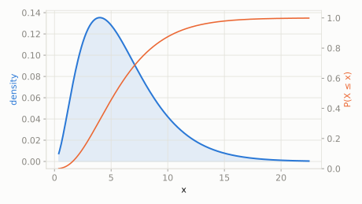

An ice-cream truck passes by every 2 minutes on average (Exponential). A kid wants to know how long until the 3rd truck shows up.
What's the chance the 3rd truck arrives within 4 minutes, and what's the expected total wait?
scipy.stats.gamma
Chain several independent Exponential waits back to back and ask for the *total* time -- that sum follows a Gamma distribution. Shape parameter a is 'how many waits', so Gamma with a=1 is just Exponential itself.
| parameter | default used here | meaning |
|---|---|---|
a | 3 | shape -- how many exponential waits are being summed |
scale | 2 | scale of each underlying wait |
An ice-cream truck passes by every 2 minutes on average (Exponential). A kid wants to know how long until the 3rd truck shows up.
What's the chance the 3rd truck arrives within 4 minutes, and what's the expected total wait?
scipy.statsimport scipy.stats as stats
import numpy as np
dist = stats.gamma(a=3, scale=2)
print('P(3rd truck within 4 min):', round(dist.cdf(4), 4))
print('expected wait for 3rd truck:', dist.mean())